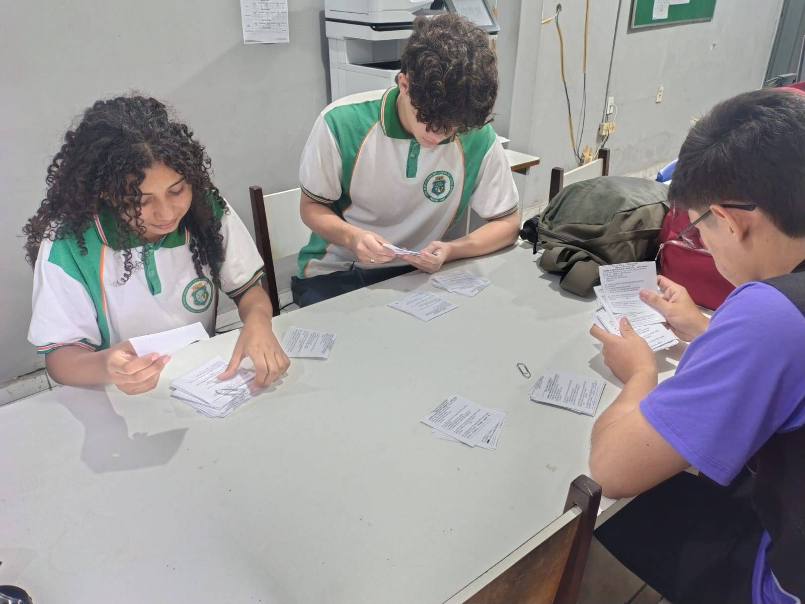

Início do Caderno de Campo
No dia 16 de maio, iniciamos oficialmente a elaboração do Caderno de Campo, uma ferramenta essencial para documentar todas as fases do projeto. Essa etapa marcou o início da organização detalhada das informações coletadas, permitindo um registro claro e estruturado das nossas atividades, reflexões e descobertas ao longo da pesquisa. Durante esse processo, definimos o formato e os critérios para a anotação dos dados, garantindo que o caderno fosse funcional e enriquecedor para futuras análises. Também começamos a revisar os registros anteriores, organizando os materiais de forma coerente e acessível. Esse dia representou um avanço significativo no projeto, consolidando nosso compromisso com a produção de um conteúdo bem fundamentado e de qualidade.
